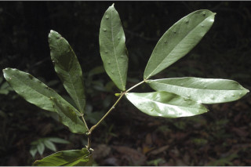
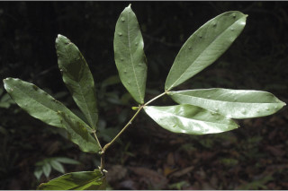
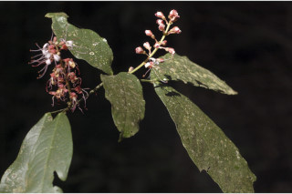
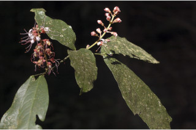
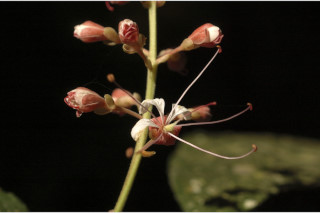
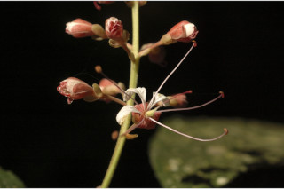

| Leaves : | Leaves compound , paripinnate , alternate , distichous , pulvinate ; stipules in pairs, lanceolate with broad reniform foliaceous appendage at base; rachis short ca. 6 cm long, angular , obscurely winged ; leaflets 2 pairs, subsessile , lower most pair just above the pulvine , lamina 8-26 x 2-8.3 cm, narrow elliptic to oblanceolate , apex bluntly cuspidate with mucronate tip, base asymmetric , subcoriaceous , glabrous ; midrib impressed above; secondary_nerves strong ca.10 pairs; tertiary_nerves reticulate . |


 

 

 
